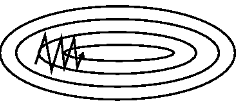
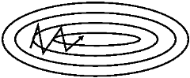
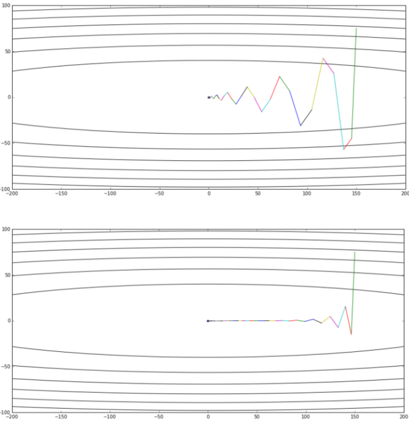

梯度下降（Gradient Descnet, GD）是目前DNN（Deep Neural Network）中使用最多的优化算法，相同的数据，相同的DNN结构，相同的初始化参数值，使用不同的优化算法会得到截然不同的结果，因此优化算法非常重要，但是梯度下降法有一些缺点，为了对这些缺点进行修正，GD优化算法经历了很多演进，但是目前仍然没有一种普适的优化算法，这里根据论文《An overview of gradient descent optimization algorithms》的描述，将GD算法的的各种改进做了一些总结。
最初的GD算法
对于待优化的函数$J(\theta)$，其中$\theta$是待优化参数，GD算法的思路非常简洁，即指定学习速率$\eta$和参数初始值$\theta^0$，按照如下方式迭代的更新参数，其中$\nabla_\theta J(\theta)$表示梯度，$\theta^i$表示第$i$次更新后的参数值，
对于凸问题或者拟凸问题，这样的迭代最终会使得参数在最优点附近震荡，对于非凸且非拟凸的问题，这样的迭代大概率会最终在一个局部极小值附近震荡。
这里还有个问题是$J(\theta)$往往无法准确地计算，因为$J(\theta)$和所有的训练数据相关，如果每一次迭代都去完整的遍历一遍所有数据，那么时间上可能不可接受，因此有了最初的两个GD算法的变种：随机梯度下降（Stochastic gradient descent，SGD）、批梯度下降（Mini-batch gradient descent）
随机梯度下降（Stochastic gradient descent，SGD）
针对$J(\theta)$和所有的训练数据相关从而导致计算耗时长的问题，随机梯度下降的思想非常朴素：每次迭代时随机选取一个样本进行训练。如下所示，其中$\nabla_\theta J(\theta;x^{(i+1)},y^{(i+1)})$表示根据第$i+1$次随机选择到的样本标签对$(x^{(i+1)},y^{(i+1)})$计算得到的损失函数。
小批梯度下降（Mini-batch gradient descent）
和随机梯度下降的动机相同，为了简化损失函数的计算，这里每一次使用一批数据（n个样本）来进行损失函数的计算（本质上是将多个损失函数进行求和或者求平均），如下所示：
这里需要注意的是，很多深度学习框架的实现中，SGD代表的不是随机梯度下降，而是随机小批梯度下降，即随机打乱数据之后，再使用小批梯度下降进行优化。
这几个方法没有什么本质上的区别，在数据的选择上，如果每次迭代时计算梯度所用到的数据越多，那么梯度的计算自然更加准确，但是数据过多，又会引起计算时间增加导致迭代缓慢，因此每次选择多少个数据来进行计算，即批大小（batch size）的选择就是在这两个问题上进行权衡。至于为什么要随机选择，自然是为了将数据充分混合，在pytorch的dataloader实现中，一般是在最初将数据shuffle一次，然后每次迭代都顺序选择下一批数据。
梯度下降算法的主要难点：
- 学习速率的选择，过大的学习速率会导致算法不能很好的收敛（在局部极小值附近大幅度震荡），因此一般使用初始大学习速率，然后学习速率逐渐衰减的方式，但是学习速率的初始值和衰减速度同样难以设置。
- 对于存在很多鞍点的问题，梯度下降算法理论上无法正确的处理在鞍点的情况（但实际上每次随机使用不同的数据计算梯度，很难得到一致的鞍点，总有可能随机到一些数据计算出来在原来的鞍点处又有梯度的情况，因此后面的一些说能够有助于逃离鞍点的动量化方法，我认为其实在这方面意义不是非常大，这可能也是很多论文中依旧在使用SGD，而且效果也还可以的原因）
- 在狭长的损失函数区域中，梯度下降算法非常容易震荡，如下图所示。

Momentum
为了解决上面的最后一个问题，在SGD中可以使用动量项（Momentum term）进行改进，类似于物理上的动量概念：运动方向的改变不是瞬间变化的，而是缓慢改变，平滑过渡。动量项可以表达为：
有些地方也写成
其中$m^0$一般初始化为0，$0 < \gamma <1$，$\gamma$一般被设置为$0.9$，这个表达式的意思就是将之前的梯度方向累积下来，优化算法在迭代时，不再是直接向着梯度方向更新，而是使用动量来更新：
这样的好处是可以避免更新方向的频繁变化，减少震荡，加速收敛。
Momentum可以抑制更新过程中的震荡，以狭长形状的损失函数为例，使用动量项之后，其更新轨迹类似下图：

Nesterov accelerated gradient（NAG）
NAG方法对Momentum方法进行了改进，其思想非常简单：既然需要沿着动量方向进行参数更新，那么梯度的计也可以在动量更新之后再进行，即沿着动量方向进行参数更新之后再计算梯度来修正动量，最后再使用修正后的动量来更新。
可以通俗的理解一定程度上预测了Momentum下一步的位置，然后根据未来的位置计算梯度来对动量项进行修正。
因此这里将动量定义为：
这样的动量项也被称为Nesterov Momentum，参数更新过程依旧不变：
Momentum和NAG的运行差别如下图所示（图片来自于《路遥知马力——Momentum - 无痛的机器学习 - 知乎专栏》），上面的是Momentum方法，下面的是NAG方法。

NAG的另外等价一种表达方式可以写成：
这个等价的推理过程可见比Momentum更快：揭开Nesterov Accelerated Gradient的真面目，这里表达的意思就是“如果这次的梯度比上次的梯度变大了，那么有理由相信它会继续变大下去，那就把预计要增大的部分提前加进来；如果相比上次变小了，那么需要动量项上需要做相应的减少”，$\gamma(\nabla_\theta J(\theta^{t-1}) - \nabla_\theta J(\theta^{t-2}))$这一项其实是利用了近似二阶导数信息。因此NAG相比于Momentum要快些。
Adagrad
Adagrad的主要思想是让学习速率能够自动调整，使得更新频繁的参数有更小的学习速率，更新少的参数有更大的学习速率。
这里的意思是每个参数的学习速率各不相同，使用每个参数每次的梯度平方和来计算，例如对于参数$\theta$，其第$i$次更新的梯度$g^i$，初始学习速率为$\eta$，那么第$t$次更新的时候，该参数的学习速率$\eta^t$的计算方式如下：
如果每次梯度都很大，那么这个参数就被认为是频繁更新，学习速率衰减比较快，否则学习速率衰减比较慢，可以说Adagrad是一种学习速率衰减方法。
Adadelta
在Adagrad中，由于$v^t$是单调递增的，因此Adagrad很容易导致提前停止训练，所以在Adadelta中将其改成不关心全局的梯度，而是只关心最近一段时间的梯度，这里将$v^t$改成如下计算方式：
RMSProp
RMSProp算法是Adadelta的一个特列：$\gamma=0.9$
Adam（Adaptive Moment Estimation）
Adam其实就是在Adadelta的基础上添加了momentum，然后稍微做了些修正，修正是因为考虑到其初值是0，会对动量和二阶动量的估计造成偏差，其实这里可以看出，修正之后$\hat{m}_{1,j}$其实就是$g_{1, j}$，$\hat{v}_{1,j}$也是类似的。
参数$\theta$的更新变成：
Adam在实际使用中也是非常常见的优化方法，既有动量方法的优点，又能自动调整学习速率。
NAdam
既然Adam都使用了动量方法，那肯定要试一下将NAG（Nesterov accelerated gradient）方法加入进来，因此就有了NAdam。
对于NAG，这里做了一些变化，首先令$\hat{\theta}^{t-1} = \theta^{t-1} - \eta \gamma m^{t-1}$，那么Nesterov Momentum可以写为：
则NAG的更新可以写成：
根据NAG的思路得到了$m^t$，那么在Adam中得到$\hat{m}^t = \frac{m^t}{1 - \beta^t_1} = \frac{\beta_1 m^{t-1} + (1 - \beta_1)\nabla_\theta J(\hat{\theta}^t)}{1 - \beta^t_1}$之后，$\hat{\theta}^t$的计算变为：
这里如果用$\beta_1\hat{m}^{t-1}$来替换$\frac{\beta_1 m^{t-1}}{1 - \beta^t_1}$，则可以简化为：
完整的NAdam表达如下：
一般如果使用Adam有效的场景，都可以使用NAdam来得到更好的效果。